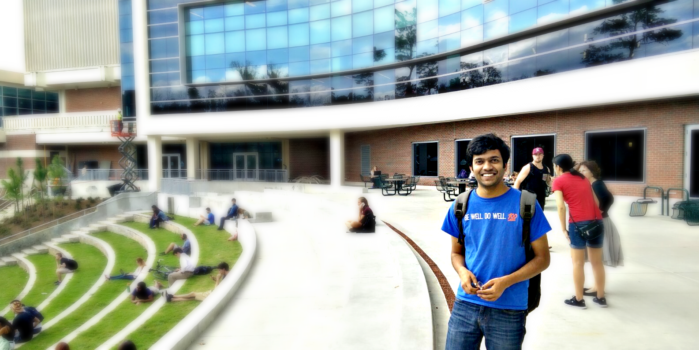

Address
4000 SW 37 Blvd,
Gainesville 32608,
Florida.
Download Resume

Download my resume by scanning the QR code

In spring 2013, during second year of college, I took a web development lab course where we were assigned the task of building a webpage in Notepad. Thus began my love affair with web development, the digital world won me over early on. I have since been creating user friendly digital web applications ranging from web to mobile.
I find great interest in JavaScript and its upcoming frameworks especially AngularJS.
I love knowledge, and I strongly believe technology can, and should enrich every single life this universe has to offer.
My background as a Web Developer and continued education in Computer Science has allowed me to stay ahead of the curve and attain a strong foundation of technical skills.
In addition to the skills I have acquired, and the extensive computer science education I possess, I also have a great track record of success. I was awarded a partial scholarship for my Master’s in Computer Science at University of Florida.
Since the time, I was introduced to the world of internet, I was always curious of how someone who is just a college student can make something so complex and complicated like Facebook or Twitter. I was fascinated and intrigued by the technology behind these websites. This was my motivation for learning web development and when I was learning MEAN stack - I planned on making similar of my own. I made a small-scale twitter like website from scratch (https://mittens-meow.herokuapp.com) which allows a user to register, add tweets and delete tweets. I would consider this to be my most impressive accomplishment as it gave me the confidence to develop more complex projects and made me believe nothing is impossible if you work hard.
4000 SW 37 Blvd,
Gainesville 32608,
Florida.
Download my resume by scanning the QR code